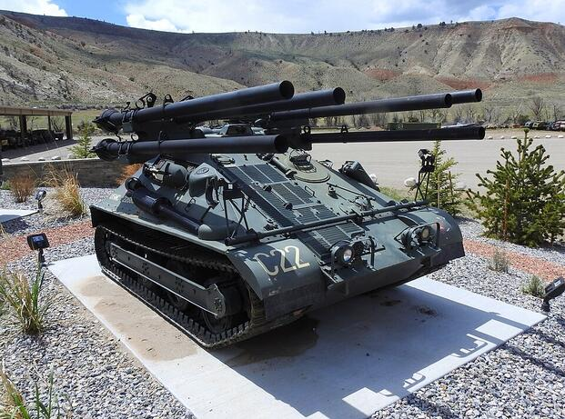

M50 Ontos
Призначення: легкий винищувач танків та штурмова машина підтримки морської піхоти. Країна: США. Роки виробництва: 1955-1957. Експлуатація: 1956-1969. Кількість: 297 шт. Озброєння: 6 × 106-мм безвідкатних гармат M40A1C, 4 × 12,7-мм пристрілочні кулемети, 1 × 7,62-мм кулемет Browning. Броня: тонка протикульна сталева броня — до 13 мм. Маневреність: 48 км/год, бензиновий двигун GMC (пізніше 6-циліндровий Chrysler у версії A1). Екіпаж: 3 особи. Суть у бою: миттєве нанесення колосальних пошкоджень. Машина могла вистрілити всі шість гармат одночасно або серією, повністю знищивши танк супротивника чи вогневе гніздо у міських руїнах, а потім швидко відступити на перезарядку. Відомі битви: Війна у В'єтнамі (особливо оборона Кхешані та битва за Хюе). Цікава особливість: слово «Ontos» перекладається з грецької як «Річ». Головним недоліком машини було те, що для перезарядки безвідкатних гармат заряджаючому доводилося вилазити з броньованого корпусу назовні, підставляючись під кулі ворога. Модифікації: M50: первісна серійна версія з 6-циліндровим двигуном GMC. M50A1: модернізація 1963 року із заміною двигуна на потужніший V8 Chrysler HT413.
